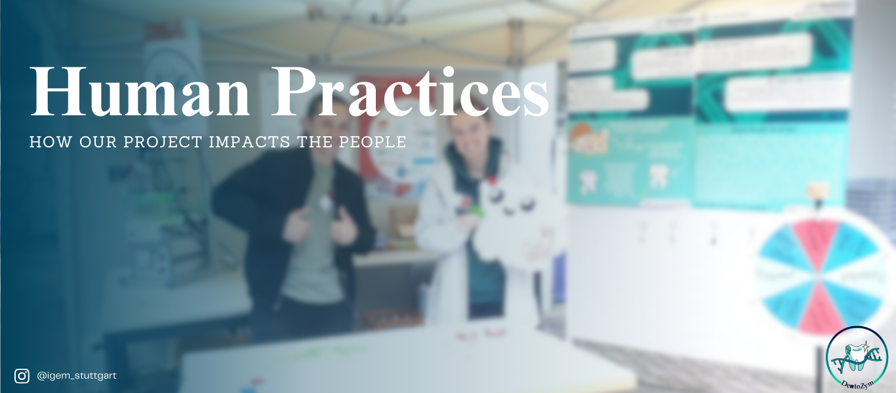
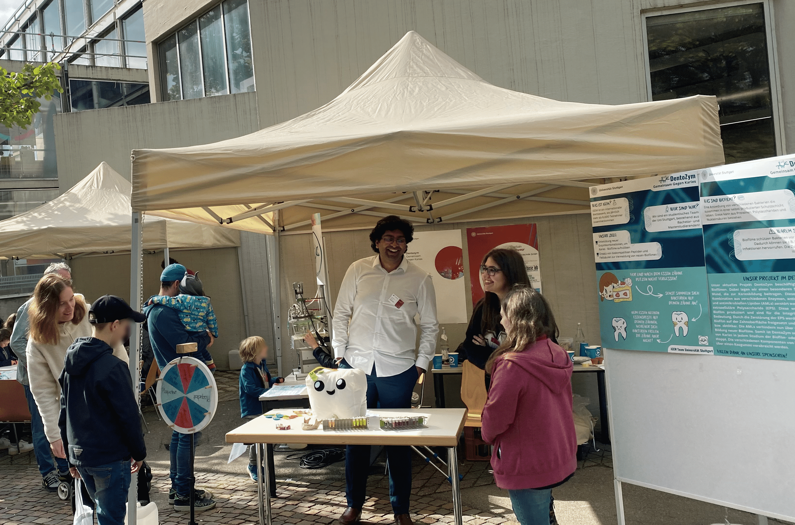
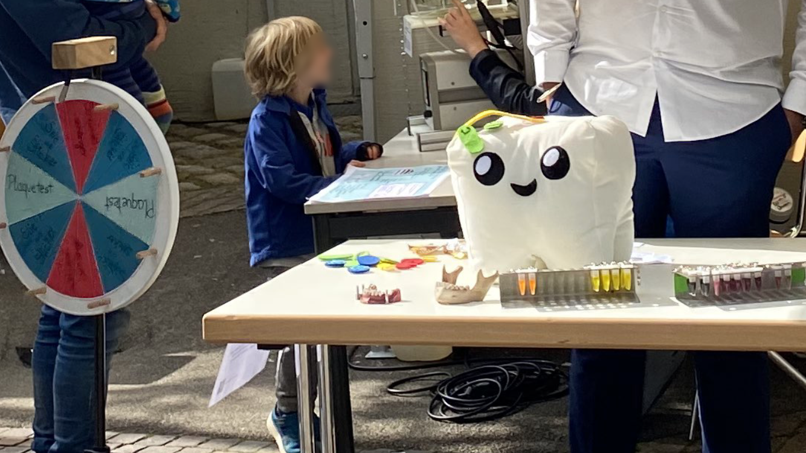
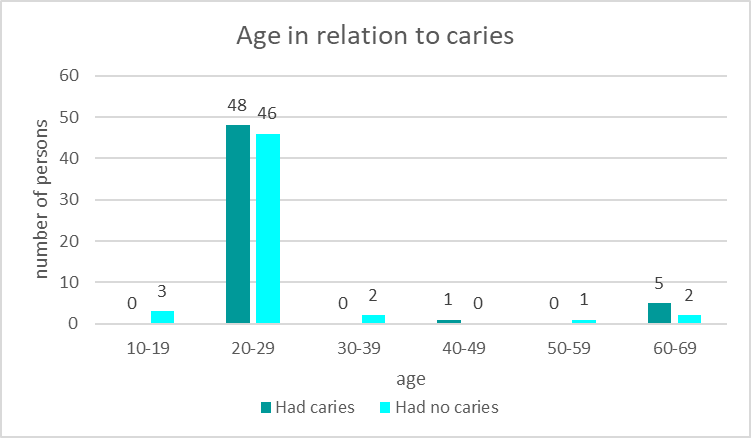
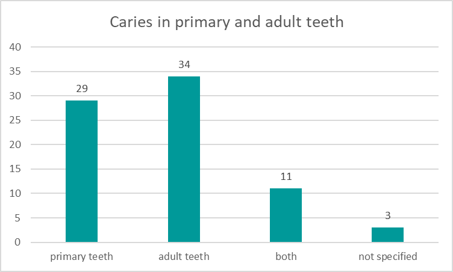
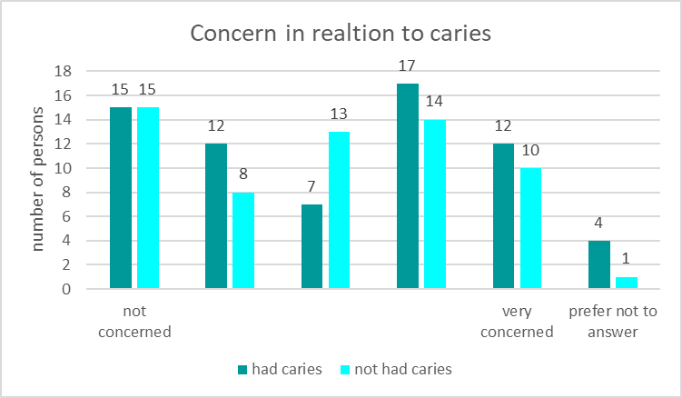
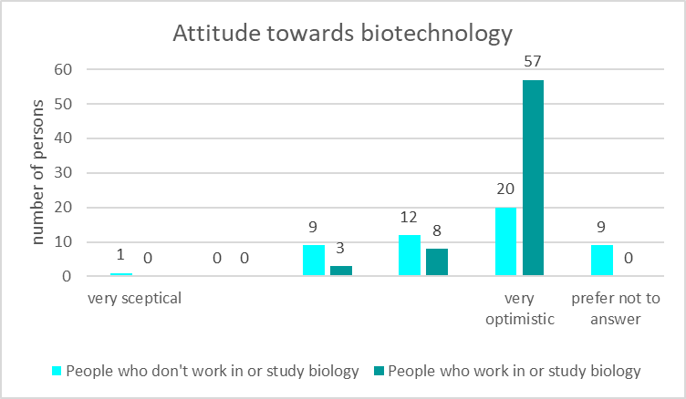
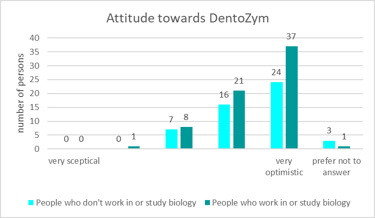
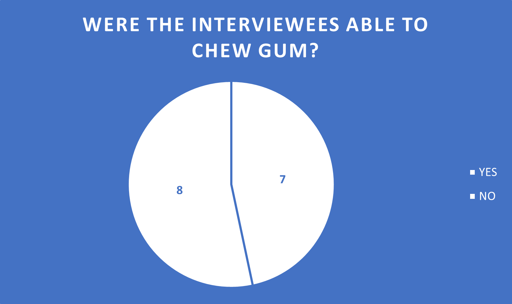
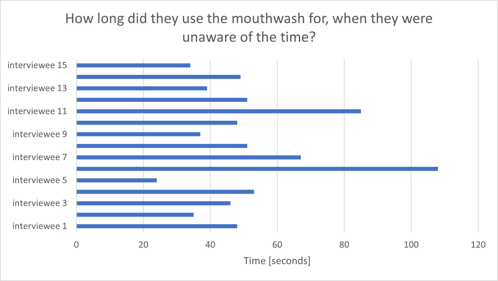

A big part of a synthetic biology project, apart from the science behind it, is the way that project reaches people and who this new idea might help. Therefore, integrated Human Practice is an important section that helps to enhance and improve a project directly from the feedback of the stakeholders and professionals. As you can imagine, dental caries is an oral disease that affects millions of people of different ages and lifestyles [1]. Whenever non-communicable diseases such as caries are left untreated, many negative long-term consequences such as pain, infection, abscesses or even sepsis can affect the person [2].
In the earliest moments of the project, we realized that a simple approach to destroy the causing caries biofilm is not enough. The problem we discovered with our method after an informal discussion with our professors was that the simple approach needed a better-defined plan that addressed the drawbacks and problems with having only enzymes involved in making the harmful biofilm disappear. That’s how we were able to develop our three-step plan, which shows our new and improved approach.
However, a solid foundation for the project plan was not enough, we needed direct feedback from the people we wanted to work with.

Our first instance in which we engaged with different kinds of people and their opinions on our project was during the ‘Tag der Wissenschaft’ (‘Day of science’) held at our university. The participants who wanted to know more about our synthetic biological approach against caries helped us understand how our project is perceived by the public.

The day started with the preparations for our booth and posters presenting our project. We had planned a variety of different attractions that would hopefully interest many participants of the "Tag der Wissenschaft". We exhibited a model bioreactor and a tooth, which we used to explain the approach of our proposal to destroy the caries-causing biofilm and prevent the bacteria from forming a new one.
In addition, we even exhibited a rotating wheel where participants could win various prizes. One of the prizes was a model of an Eppendorf tube in different colors, which proved to be very popular with the children.
During our exhibition, some of our professors stopped by our booth to learn more about our project, but the biggest guest we welcomed was the director of our university. With him came a large group of different people from the press, industry and politics. We were excited to be able to show and explain our synthetic biology idea to a number of people and get their feedback. It was an interesting experience as it gave our idea some new perspectives and showed us how the public received and evaluated our idea.
At the end of the day, we had a successful booth that attracted many visitors. Overall, it was a great experience for our iGEM team. The planning of our booth, the days leading up to the exhibition and the exhibition itself taught us a lot about project management and how to present our ideas and project to people.

This led to the question, how often children and their primary teeth are infected. Therefore, we posed the question if the affected people experienced caries in their primary teeth or in their secondary teeth. The results are shown in figure 2.

As can be seen above adult teeth are affected slightly more often, but there still were 29 cases of caries in primary teeth. And most people only experience caries only in their adult teeth or their primary teeth. DentoZym could therefor help people at any stage of their life and furthermore ease the concern about reoccurring caries.
Therefore, it was of interest whether people who already experienced caries were more concerned about their dental health or not. This relation is presented in figure 3.


The attitude towards biotechnology is optimistic for both groups with many abstentions in the group of people who don’t work in or study biology. This shows that there is an uncertainty and lack of knowledge in public. Which could explain, why the attitude towards DentoZym is more positive in this group. Interestingly people who work in or study biology are more sceptical towards DentoZym. This could be explained, by the fact that the introduction of the survey did not go into great scientific detail. Additionally, persons versed in the field know the challenges connected to producing a biocompatible product.
Therefore, there were not only a lot of hopeful comments at the end of the survey, but also questions and concerns. “Are there side effects regarding to other, helpful microorganism in the mouth flora?” questions in the same manner as this one were the most frequent. This animated us to think about how to reassure the public about the specificity of our antimicrobial peptides.

In conclusion, caries is a disease that not only lot of persons struggle with. But is also a topic, where people would be willing to try new approaches. Because this was study was only spread via a link towards our friends, families and fellow students, it reached a lot of young people who are well versed in biology. To also get an impression of the struggles and opinions of the older generation we interviewed fifteen persons age 71-91. These interviews can be found below.
Considering the scientific and laboratory part of our project we still had to obtain expertise from other scientists. For this purpose, we visited the Fraunhofer IGB and contacted Prof. Dr. Susanne M. Bailer. She is the head of the group “Virus-based Technologies” at the Fraunhofer Institute for Interfacial Engineering and Biotechnology and further associated with the Institute for Interfacial Engineering and Plasma Technology IGVP. Her research focusses on new and innovative virus-based therapies. Her research group tested a new prophylactic approach against caries-causing bacteria called "Kari-EX", that is similar to ours. The goal of this project was to kill the caries-causing bacteria by using bacteriophages.
We met with research associates Dr. Carina Rohmer and M.Sc. Jens Wetschky. During this meeting, we asked them many technical questions about our approach in the wet lab. They gave us several new suggestions for improvement of our experimental and compound design. To synthesize our components, we wanted to combine several different fragments into one plasmid. For this, they showed us a refined approach using linkage PCR that helped us for implementation of our multiple fragments. We also discussed several proof-of-concept methods and approaches. We got many tips on how to improve our approach and make sure they are successful in the end.
One aspect they drew our attention to was that each person has (to some extent) a unique microbiome composition. Hence, biofilms that cause caries can also vary from person to person. Moreover, they emphasized, that cytotoxicity of our compounds is an important task that must be thoroughly tested in order to ensure our approach to be a safe and represent an advanced alternative to the methods already used against caries.
The conversation was very helpful for us as we were able to not only refine our already planned wet lab protocols, but also get new ideas and insights from more experienced people in the field. We made a lot of changes to our wet lab protocols to match the professional insight they gave us.
An important step in integrated human practice is communicating with and interviewing our project's direct stakeholders. Through the knowledge gained from our previous surveys and interviews, as well as further research, we have found that people with disabilities and age-related limitations have oral health issues - a group of people that is often overlooked [3].
For this, we interviewed a total of 15 different people, all of whom were over 70 years old. Some of these people struggle with various disabilities, such as Alzheimer's disease, arthritis, and Parkinson's disease, which affect their oral care. They statedsaid they often already struggled with disabilities and age-related physical limitations, so they were not able to take such great care of their oral health. An important question we asked them was their general opinion on biotechnology and genetically modified products, as well as their opinion on our product DentoZym, which contains bioengineered compartments. The answers we received were quite interesting. Many of these candidates were skeptical of bioengineered products and their side effects, but when we asked them how likely they were to use DentoZym, their skepticism decreased. As much as our surveyed stakeholders wanted an ethically tested and safe product, they also expressed that they would use such a product that would help them reduce their caries risk even if it were to be bioengineered.

We also asked respondents which application form of our biofilm-eradicating mixture they preferred. In general, they indicated that they preferred mouthwashes or special toothpastes to a gum, as some of the respondents had problems chewing gum which can be seen in figure 6. To test how long people use mouth wash we gave the participants mouth wash and asked them to use it without them knowing the time (figure 7). This was done to test how long people use mouth wash and therefore how long our product would be able to stay in contact with the biofilm. When asked all participants were able to use the mouthwash for 90s when asked.
We also asked respondents which application form of our biofilm-eradicating mixture they preferred. In general, they indicated that they preferred mouthwashes or special toothpastes to a gum, as some of the respondents had problems chewing gum which can be seen in figure 6. To test how long people use mouth wash we gave the participants mouth wash and asked them to use it without them knowing the time (figure 7). This was done to test how long people use mouth wash and therefore how long our product would be able to stay in contact with the biofilm. When asked all participants were able to use the mouthwash for 90s when asked.

All in all, we saw that our idea and new method against caries would benefit a wide range of people, especially people with limitations who cannot maintain their oral hygiene. These people often fall under the radar when it comes to the need for an improved approach to tooth decay and its effects, and that's why we want to provide them with new and refined oral health through ‘DentoZym’.
[1] Oral health; 14 March 2023; World Health Organization; https://www.who.int/news-room/fact-sheets/detail/oral-health (last visited 12.10.23)
[2] Sugars and dental caries; 9 November 2017; World Health Organization; https://www.who.int/news-room/fact-sheets/detail/sugars-and-dental-caries (last visited 12.10.23)
[3] https://pubmed.ncbi.nlm.nih.gov/34250950/